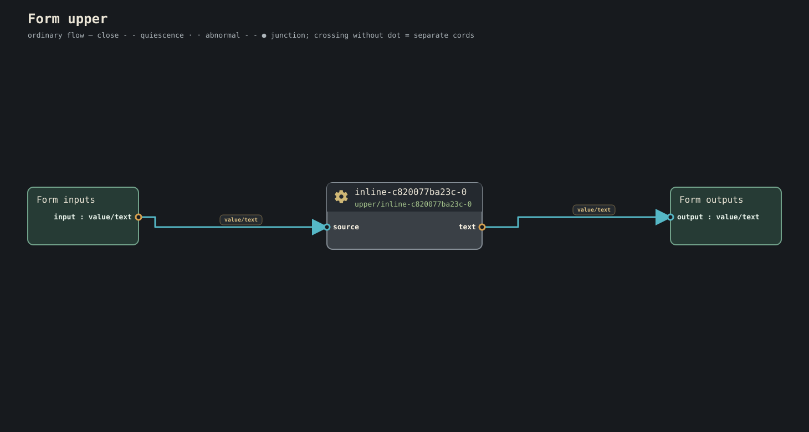

Journey 10 of 23
Conduitese treats temporal shape as meaning, not container trivia.
Time is part of meaning
Many programming models treat time as something that happens to values after the type system has finished its work.
Conduit treats temporal shape as semantic information.
“One value,” “a stream of values,” “the current retained value,” “an immutable saved generation,” and “a value that may arrive later” are not merely different containers around the same T; they make different promises about causality, pressure, lifetime, completion, and replay.
That is why the language gives these distinctions visible syntax instead of hiding them behind mutable variables and callbacks.
Four common temporal shapes
T one ordinary value
T... a flow of values
T...| a closing flow
$T a current retained value
Optionality composes with these forms, so T? and $T? remain distinct.
keep means retained current truth
frequency: keep Frequency(440Hz) for this play
The Pocket Theremin uses this to retain current frequency.
A longer-lived value can request a longer semantic duration:
note: keep Text <= 4KiB for life
The duration is part of the semantic contract. A plan that cannot supply sufficient durability should refuse rather than silently shorten the promise.
A keep is not a mutable variable with a nicer name. It is a current semantic value with an exact retention law.
Current is not Value
There is no implicit conversion from $T to T.
Why? Because silently reading the latest current value at an arbitrary moment would hide causality.
Sampling is explicit:
note @ save-request >> snapshot
The @ glyph names current/sample.
One accepted trigger owns one sample. The observed generation is the exact current generation causally visible when that trigger is consumed.
Save is not keep
The guiding persistence distinction is:
keep says how long current truth must live. save says make this particular truth independently addressable.
An independently addressable generation is data.
Conceptually:
keep T current retained truth
&T ordinary finite info naming immutable data
save publish a generation
load recover typed info from a named generation
&T is not a pointer and does not grant authority.
Saving one generation does not freeze the keep:
keep: A -> B -> C -> D
|
save C as generation G
later:
keep is D
G still names immutable C
That is why the Durable Notebook vertical refuses "autosave fiction." See #4116.
Live versus finite forms
A live form:
form clock-demo {
clock: time/every(1s)
clock >> presentation/tick
}

can quiesce and resume.
A finite-on-drain form:
form upper (
>> input: Text
output: Text >>
) {
input >> text/upper >> output
}.

turns structural drain into semantic completion.
The full stop does not mean "kill the scheduler now."
Quiescence is not completion
A live play may have no admitted work capable of progress and still remain alive.
That state is quiescence.
active → quiescent → active
Later admitted work can wake the same play again. Semantic completion is stronger: it means the authored form has supplied a completion witness, such as structural drain on a form explicitly marked finite-on-drain.
The distinction prevents an idle reactive system from being mistaken for a finished one.
Source activation is ordinary semantic work
External conditions can activate source gears:
form scheduled-reminder {
source: notification/deterministic-reminder
deliver: notification/deliver-reminder
source.reminder >> deliver.reminder
}
A timer, button, network receive, or sensor can be a source of admitted work. Conduit does not need a callback language to model that.
Multi-input time must be explicit
Two independent runtime inputs do not silently synchronize because an expression mentions both.
Different temporal operations remain different:
merge arrivals
zip next values
race first admissible winner
combine current/latest values
sample current on a trigger
deadline
window
The standard glyphs preserve that distinction:
a >< b >> merged
left &> right >> pair
primary ?> secondary >> winner
a <> b >> latest-pair
note @ save-request >> snapshot
Pressure is semantic too
Fan-out is explicit:
observation >> display
observation >> tone
A slow display may not silently make an audio branch lossy. Dropping, sampling, coalescing, buffering, and coupling are semantic policy where desired.
Queues and retained histories are bounded.
Terminal truth is separate from time
Conduit distinguishes:
normal close
typed abnormal terminal
semantic cancellation request
scheduler/plan cancellation
A cancel request is not proof that cancellation succeeded. A recovered provider fault does not necessarily become a semantic endpoint fault. Unrecoverable abnormal truth may not disappear.
The exact laws are in Terminals and concurrency reference.